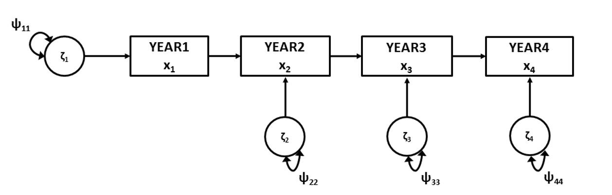
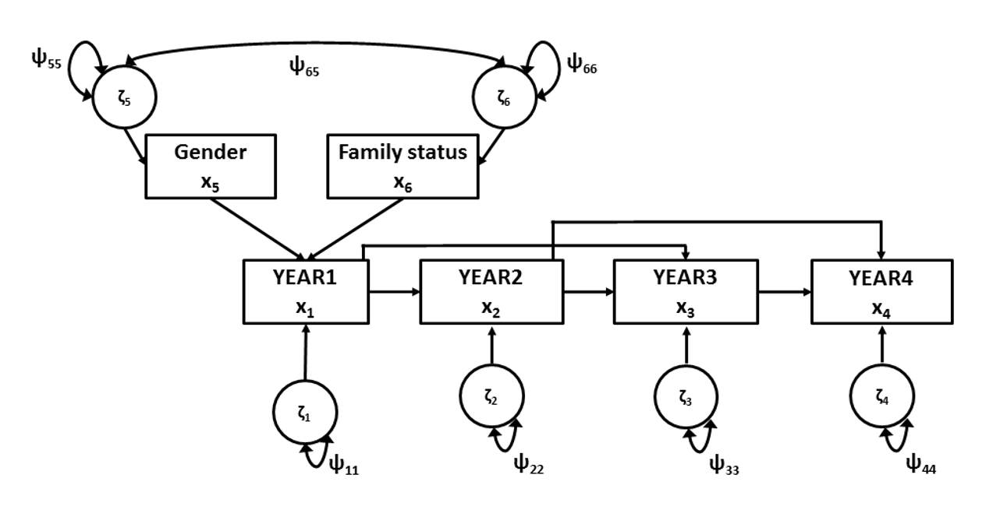

8 Autoregression
In an autoregression (or autoregressive) model, the observed variables are the same variable, measured at different time points. Each observed variable regresses on the same variable at the previous measurement occasion. Hence the term “autoregression”. An autoregression model allows us to study interindividual change. The direct effects between subsequent timepoints indicate how stable the ordering of individuals is across time. Therefore, the direct effects are also called “stability coefficients”.
A simple autoregression model with four measurement occasions (collected in four years) is depicted in Figure 1. This example is taken from Duncan and Duncan (1996), who conducted a longitudinal study of alcohol use among adolescents. A sample of 321 adolescents were surveyed annually over a 4-year period, in which they indicated their alcohol consumption.
 Figure 8.1. Simple autoregression model.
Script 8.1 fits this model to the data of Duncan and Duncan (1996).
### Script 8.1 ###
## observed data
obsnames <- c("year1","year2","year3","year4","gender","famstat")
values <- c(1.000,
.640, 1.000,
.586, .670, 1.000,
.454, .566, .621, 1.000,
.001, .038, .118, .091, 1.000,
-.214, -.149, -.135, -.163, -.025, 1.000)
SD <- c(1.002,.960,.912,.920,.504,.498)
duncancov <- getCov(x=values, names = obsnames, sds = SD)
names(duncanmeans) <- obsnames
## define model
duncanmodel <- '
# COVARIANCES
# regression equations
year4 ~ b43*year3
year3 ~ b32*year2
year2 ~ b21*year1
# residual variances
year4 ~~ p44*year4
year3 ~~ p33*year3
year2 ~~ p22*year2
# variance exogenous variable
year1 ~~ p11*year1
'
## run model
duncanmodelOut <- lavaan(duncanmodel, sample.cov=duncancov,
sample.nobs=321,
likelihood = "wishart", fixed.x=FALSE)
## output
summary(duncanmodelOut, fit = TRUE)The autoregression model is actually a simple path model. For the covariance structure we define the direct effects between the observed variables (matrix \(B\)) and the (residual) variances (matrix \(\Psi\)).
If an autoregressive model doesn’t explain the correlations between measurements well enough, one could add ‘second order autoregressive effects’. In Figure 1 this would be a direct effect of Year 1 on Year 3, and a direct effect of Year 2 on Year 4.
A common practice in autoregression models is to constrain the autoregression effects (i.e., the direct effects between the measurements) to be equal. This is done by providing equal labels for these effects in the \(B\) matrix:
# regression equations
year4 ~ Beq*year3
year3 ~ Beq*year2
year2 ~ Beq*year1The difference in model fit between the model without equality constraints on the regression coefficients and the model with the equality constraints on the regression coefficients, can be used to determine whether this equality constraint is tenable.
It is only theoretically justifiable to make this constraint if the lag (time between measurements) is equal. Because causal effects take time to occur, the size of the effect depends on the lag between measurements. For example, effects typically grow stronger for a short duration after the first measurement, but then the effect grows weaker over time. So when you report estimated autoregressive effects, make sure to be clear that the estimate applies only to the lag between those occasions (in this example, 1 year).
8.1 Autoregression models with predictors
If an autoregression model fits the data well, predictors can be added to the model. These predictors are usually entered as exogenous variables, with a direct effect on the first measurement. When the predictor variable represents an intervention that took place after the first measurement, one would only add direct effects of that predictor on timepoints after the intervention.
Script 8.2 fits an autoregression model, with second order autoregression effects, and ‘gender’ and ‘family status’ as predictors to the same data of Duncan and Duncan (1996) as in script 8.1. This model is depicted in Figure 2.

Figure 8.2. Simple autoregression model, including predictor variables.
### Script 8.2 ###
## define model
duncanmodel <- '
# COVARIANCES
# regression equations
year4 ~ b43*year3 + b42*year2
year3 ~ b32*year2 + b31*year1
year2 ~ b21*year1
year1 ~ b15*gender + b16*famstat
# residual variances
year4 ~~ p44*year4
year3 ~~ p33*year3
year2 ~~ p22*year2
year1 ~~ p11*year1
# (co)variance exogenous variable
gender ~~ p55*gender
famstat ~~ p66*famstat
gender ~~ p65*famstat'
## run model
duncanmodelOut <- lavaan(duncanmodel, sample.cov=duncancov,
sample.nobs=321,
likelihood = "wishart", fixed.x=FALSE)
## output
summary(duncanmodelOut, fit = TRUE)If the fit of a model where only the first measurement is regressed on the predictors is not satisfactory, one might consider adding direct effects of the predictors on later measurements as well. The conceptual difference between those two models would be their theoretical interpretation. In the example above, the predictors only affect later outcomes indirectly, so this model represents the hypothesis that any sex or family differences that existed at Time 1 do not change over time. A model with additional direct effects of predictors on later outcomes would represent the hypothesis that group differences change over time. The \(\Delta\chi^2\) statistic allows you test the null hypothesis of no change in sex or family differences over time by comparing nested models with and without those additional effects.
8.2 Cross-lagged panel models
If more than one variable are measured at several time points, one could also evaluate so called ‘cross-lagged effects’ in a cross-lagged panel model. These are the effects of one variable on the other at a later time point. Suppose that in the earlier example the researchers did not only have measures of alcohol consumption (\(x\)) across four years, but also of depression (\(y\)). The model in Figure 2 can be used to evaluate the effect of alcohol consumption in year 1 on depression in year 2, controlled for depression in year 1 (and the effect of depression in year 2 on alcohol consumption in year 3, controlled for alcohol use in year 2, and so on for later time points). The residual factors (\(ζ\)) of different variables at the same time point are often correlated, representing that the same unobserved variables may affect the responses on the two variables. For more information on cross-lagged panel models see Biesanz (2012).

8.3 References
Biesanz, J.C. (2012). Autoregressive longitudinal models. In Hoyle, R.H. (Ed.), Handbook of Structural Equation Modeling (pp. 459-471). New York: Guilford Press. Duncan, S. C. & Duncan, T. E. (1996). A multivariate latent growth curve analysis of adolescent substance use. Structural Equation Modeling, 3, 323-347.